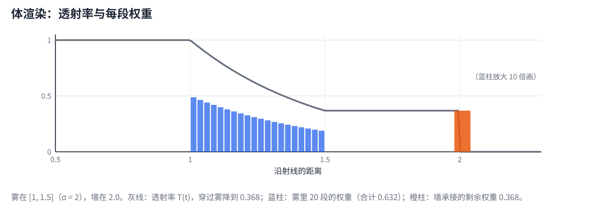
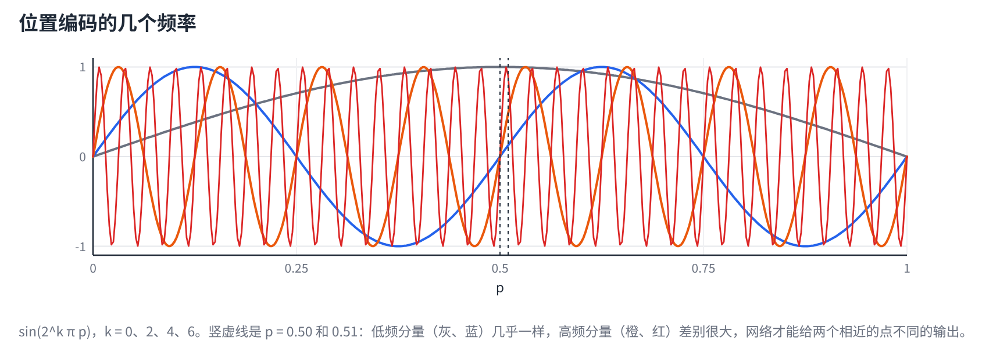
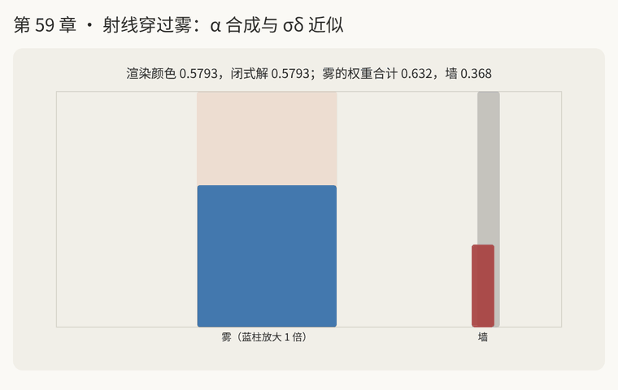

第 59 章 · 神经场景表示：体渲染积分与 α 合成、NeRF 的位置编码、3DGS 的投影与球谐颜色
本地运行
git clone https://github.com/wikieden/math-and-eval-stats
cd math-and-eval-stats/code/notebooks
pip install jupyterlab torch numpy
jupyter lab ch59_neural_rendering.ipynb也可以下载后直接用 VS Code 打开 .ipynb 运行。需要 GPU 的章节在 Colab 里选「代码执行程序 → 更改运行时类型 → GPU」。
本章回答：NeRF 渲染一个像素时，沿射线到底在算什么积分？离散化时为什么用 1 − e^{−σδ} 而不是 σδ？为什么要把坐标先编码成一堆正弦？3D Gaussian Splatting 怎么把一个三维高斯变成图像上的一个椭圆？颜色为什么要用球谐函数？
讲解日期：2026-11-25 · 上一章：第 58 章 路径规划 · 下一章：第 60 章 感知的学习与评测
对应原文：NeRFmath-and-eval-stats/materials/text/papers/nerf-2003.08934.txt（§4 体渲染，离散式 (3) Ĉ(r) = Σ T_i(1 − e^{−σ_iδ_i})c_i，L293；§5.1 位置编码 L84、L100）；3D Gaussian Splattingmath-and-eval-stats/materials/text/papers/3d-gaussian-splatting-2308.04079.txt（§4 协方差投影 Σ′ = JWΣWᵀJᵀ，J 是透视投影的雅可比 L241–L243；球谐颜色 L170、L259）
本章缩写：NeRF = Neural Radiance Field（神经辐射场）；3DGS = 3D Gaussian Splatting（三维高斯泼溅）；σ = 体密度；T = 透射率；α = 不透明度；c = 颜色；δ = 采样间隔；γ(p) = 位置编码；SH = Spherical Harmonics（球谐函数）；J = 透视投影的雅可比；W = 世界到相机的旋转。全部缩写见 附录 · 缩写与术语表
讲解
第一步：体渲染积分：透射率 × 密度 × 颜色（2026-11-25）
类比：透过一片雾看后面的墙。 雾本身有颜色，也挡掉一部分后面的光；雾越浓越厚，看到的越像雾的颜色。
沿射线 r(t) 的颜色：
T 是“光走到 t 还没被挡掉的比例”，σ dt 是在这一小段被吸收（发光）的比例。
例子（一片密度 σ = 2、厚 0.5、颜色 0.8 的雾，后面是颜色 0.2 的不透明墙）：穿过雾的透射率 e^{−1} = 0.3679，
一句话：体渲染 = 沿射线累加“透射率 × 密度 × 颜色”，透射率是前面所有东西没挡住的比例。
第二步：离散化：α = 1 − e^{−σδ} 才对（2026-11-25）
把射线切成小段，每段内 σ、c 近似常数，这一段的积分恰好是（NeRF 式 (3)，L293）：
这就是图形学里的 α 合成（从前往后叠半透明层）。
例子（同上的雾）：
| 切几段 | α 合成 | 直接用 σδ 当权重 |
|---|---|---|
| 1 | 0.579272 | 0.873576 |
| 4 | 0.579272 | 0.645115 |
| 64 | 0.579272 | 0.583233 |
密度在段内是常数时，α = 1 − e^{−σδ} 是精确的，切多少段都一样；用 σδ 当权重是一阶近似，段少时严重偏（σδ = 1 时把 63% 当成了 100%）。3DGS 的渲染也是同一个 α 合成公式，只是每个高斯给出一个 α。

图 59-1 · 横轴沿射线的距离：灰线是透射率 T(t)（进雾后指数下降、在墙处降到 0），蓝色是每段的权重 T_iα_i（雾里递减），橙色柱是墙承接的剩余权重 0.368一句话：离散体渲染 C = ΣT_iα_ic_i，α = 1 − e^{−σδ} 在段内密度恒定时精确；用 σδ 是一阶近似，段少就错。
第三步：位置编码：让网络能表示高频细节（2026-11-25）
MLP 直接吃坐标 (x, y, z) 很难学出高频细节（谱偏置：网络先学低频）。NeRF（§5.1，L84、L100）先把每个坐标编码成
例子（L = 10）：每个坐标变成 20 维，三个坐标共 60 维。0.50 和 0.51 只差 0.01，编码后相差 3.69：最高频那对每 1/512 就转一圈，相邻的点在编码空间里被“拉开”，网络才能给它们不同的输出。

图 59-2 · 横轴坐标 p ∈ [0, 1]，四条曲线是 sin(2^kπp)，k = 0、2、4、6；竖虚线是 0.50 和 0.51：低频分量几乎一样，高频分量差别很大这和第 38 章 Transformer 的正弦位置编码是同一个思路；L 太大会过拟合噪声（Instant-NGP 改用多分辨率哈希网格，更快也更省）。
一句话：位置编码把坐标映射到一组频率递增的正弦上，让相近的点可区分，网络才学得出高频细节。
第四步：3DGS：三维高斯投影成图像上的椭圆（2026-11-25）
3DGS 不用网络，而是用几十万到几百万个三维高斯（位置 μ、协方差 Σ、不透明度、颜色）表示场景。渲染时把每个高斯投影到图像上：
W 是世界到相机的旋转，J 是透视投影在高斯中心处的雅可比（L241–L243）：
例子（光轴上、各向同性标准差 0.05 m 的高斯，f = 500；在光轴上 J = diag(f/z, f/z)）：
| 深度 z | 图像上的标准差 |
|---|---|
| 2 m | 12.5 像素 |
| 5 m | 5.0 像素 |
| 10 m | 2.5 像素 |
离得越远椭圆越小；偏离光轴时 J 的第三列不为 0，球形的高斯会被拉成椭圆。投影后按深度排序，用第二步的 α 合成叠起来；整个过程可微，所以能直接用图像损失优化所有高斯的参数。
一句话：3DGS 用 Σ′ = JWΣWᵀJᵀ 把三维高斯投影成二维椭圆，再按深度 α 合成；全部可微。
第五步：球谐颜色：随观察方向变的颜色（2026-11-25）
镜面反光让同一个点从不同方向看颜色不同。3DGS（L170、L259）给每个高斯存一组球谐系数，颜色 c(d) = Σ_{l,m} k_{lm} Y_{lm}(d)，d 是观察方向。
| 阶数 l | 每通道系数个数 (l + 1)² | RGB 共 |
|---|---|---|
| 0（与方向无关） | 1 | 3 |
| 1 | 4 | 12 |
| 3（3DGS 默认） | 16 | 48 |
球谐是球面上的“傅里叶基”（第 30 章的正交展开）：低阶描述漫反射、高阶描述高光。3 阶的 48 个系数占了每个高斯参数量的大头（位置 3 + 缩放 3 + 旋转 4 + 不透明度 1 + 颜色 48 = 59）。
场景代码：用 nerfstudio 训练两种模型（真实命令行；本书环境没装，没跑过）：
ns-train nerfacto --data data/scene # NeRF 系列：哈希网格 + 体渲染
ns-train splatfacto --data data/scene # 3D Gaussian Splatting
一句话：3DGS 用球谐系数表示随视角变化的颜色，3 阶共 48 个，是每个高斯参数的大头。
动画演示：射线穿过雾

可交互版：animations/59-neural-rendering.html（滑块调雾的密度、分段数；下拉切换 α 合成 / σδ 近似）。
怎么看：
- 上方是射线：雾（橙色区域）和后面的墙（灰）；每段的柱子高度是它的权重 T_iα_i（第一、二步）；
- 右上角是渲染出的颜色和闭式解；α 合成在任何分段数下都等于闭式解，σδ 近似段少时偏得厉害；
- 把密度调大：权重集中在雾的前沿，墙几乎看不见。
练习与作答记录
题 1（第一、二步）：一段射线上有两个采样，α₁ = 0.5、颜色 1；α₂ = 0.8、颜色 0；后面没有东西。渲染颜色和总不透明度各是多少？
作答：（待作答）
题 2（第三步）：L = 6 时每个坐标编码成几维？最高频那对的周期是多少？
作答：（待作答）
题 3（第四步）：一个各向同性标准差 0.1 m 的高斯在相机坐标 (0, 0, 4)，f = 600，投影后标准差多少像素？把它移到 (2, 0, 4)，椭圆会沿哪个方向被拉长？
作答：（待作答）
口诀
透过雾看墙，透射率乘密度乘颜色沿射线积；
离散用 1 减 e 的负 σδ，段内常密度就精确；
位置编码一串正弦，近的点被拉开，网络才学得出细节；
3DGS 高斯投成椭圆，JWΣWᵀJᵀ，再 α 合成；
球谐管视角颜色，三阶四十八个系数。
本章复习卡片
ST192（体渲染积分与离散 α 合成）、ST193（NeRF 的位置编码）、ST194（3DGS 的协方差投影与球谐颜色）。练习做完后，按答错、卡住的地方补上。
附录 · 延伸阅读
留给以后深入学习用，不影响本章主线。★ 是建议先读的。
推荐阅读
| 读什么 | 读哪里 | 读它为了什么 |
|---|---|---|
| ★ NeRF（Mildenhall 2020） | §4（式 (3) L293）、§5（位置编码、分层采样） | 体渲染与位置编码 |
| ★ 3D Gaussian Splatting（Kerbl 2023） | §4–6（L241–L259） | 投影、可微光栅化、自适应增删高斯 |
| 第 38 章 位置编码的数学 | 第一步 | 正弦编码 |
| 第 30 章 泛函分析入门 | 第三步 | 正交展开（球谐是球面上的版本） |
| 第 52 章 相机几何 | 第一步 | 透视投影 |
数学原理
- 一段常密度的积分：∫₀^δ e^{−σs}σc ds = c(1 − e^{−σδ})，所以 α = 1 − e^{−σδ} 精确。
- 透射率的乘积：exp(−Σσ_jδ_j) = Π e^{−σ_jδ_j} = Π(1 − α_j)。
- 协方差的线性变换：y = Ax ⇒ Cov(y) = AΣAᵀ；透视投影在中心处线性化成 J。
- 球谐：球面上的正交基，l 阶有 2l + 1 个，到 l 阶累计 (l + 1)² 个。
公式清单
| 公式 | 意思 |
|---|---|
| \(C = \int T\sigma c\,dt\)，\(T = e^{-\int\sigma}\) | 体渲染 |
| \(C = \sum T_i\alpha_ic_i\)，\(\alpha_i = 1 - e^{-\sigma_i\delta_i}\) | 离散 α 合成 |
| \(\gamma(p) = (\sin2^k\pi p, \cos2^k\pi p)_{k<L}\) | 位置编码 |
| \(\Sigma' = JW\Sigma W^\top J^\top\) | 3DGS 投影 |
| (l + 1)² 个系数 | 球谐 |
代码对照：把本章的数字用代码算一遍
代码在仓库本地
math-and-eval-stats/solutions/chapter-code/ch59_neural_rendering.py，配套测试tests/test_ch59.py：
bash cd math-and-eval-stats/solutions/chapter-code uv run python ch59_neural_rendering.py uv run pytest tests/test_ch59.py
讲义 ↔ 代码：
| 讲义 | 公式 | 写法 | 跑出来 |
|---|---|---|---|
| 第一步 闭式解 | c(1 − T) + T·c_墙 | closed_form() |
0.579272 |
| 第二步 离散 | α 合成 / σδ | discrete(n)、naive_riemann(n) |
恒等 / 0.874 → 0.583 |
| 第三步 位置编码 | γ(p) | posenc(0.5) |
20 维，距离 3.69 |
| 第四步 投影 | fσ/z | gaussian_2d_std(0.05, z) |
12.5、5、2.5 像素 |
| 第五步 球谐 | (l + 1)² | sh_coeffs(3) |
16 |
关键几行：
alpha = 1 - np.exp(-SIGMA * delta) # 每段的不透明度
c += t * alpha * C_FOG; t *= 1 - alpha # 从前往后 α 合成
f = 2.0 ** np.arange(levels) * np.pi; return np.r_[np.sin(f * p), np.cos(f * p)] # 位置编码
代码里才看得到的 3 件事：
- 例子的密度是分段常数：所以 α 合成和闭式解完全相等；密度连续变化时离散化才有误差，要靠更细的采样或分层采样。
- 高斯只放在光轴上、各向同性：此时 J 退化成 diag(f/z, f/z)；任意 3D 协方差投影到 2D 的完整计算留给自己做（里程碑 ME-M35）。
- 没有写一般的单射线渲染函数：给定任意的 (σ_i, c_i, δ_i) 序列做离散体渲染，也留给里程碑 ME-M35。
自己改一改（不影响练习答案）：
- 把雾分成两层（前半 σ = 4、后半 σ = 0），用
discrete的思路重算颜色。 - 把位置编码的 L 从 10 改成 4，0.50 和 0.51 编码后的距离变成多少？